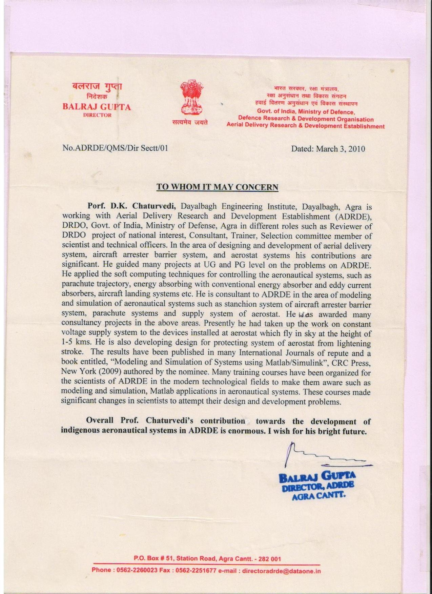
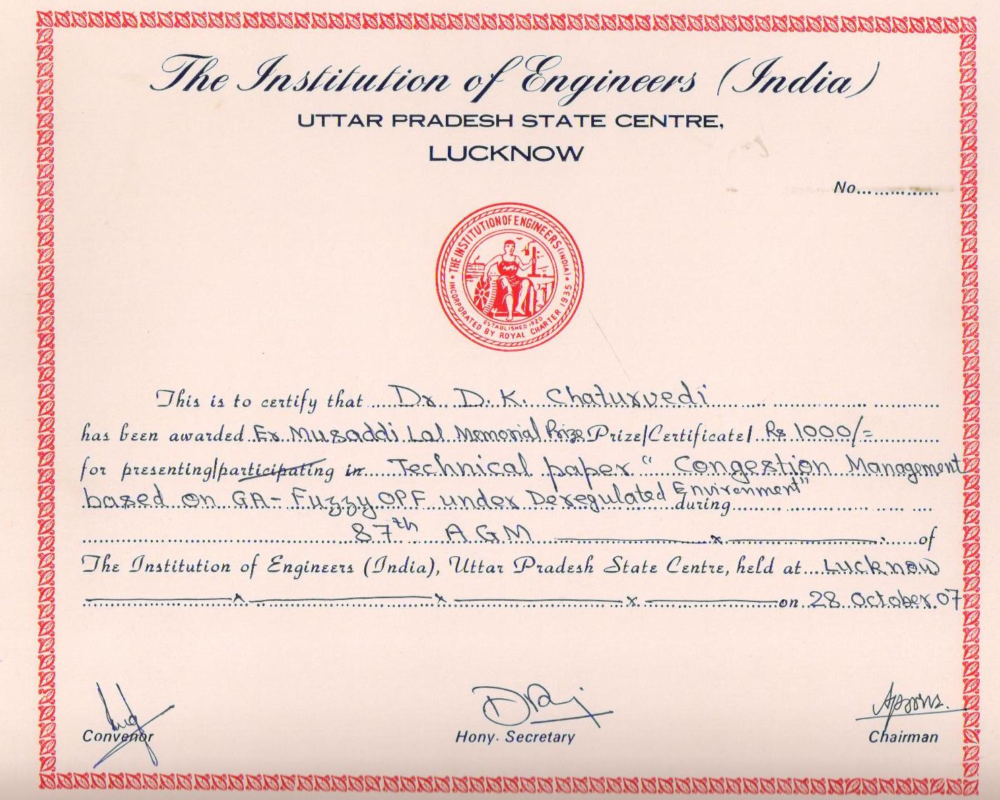
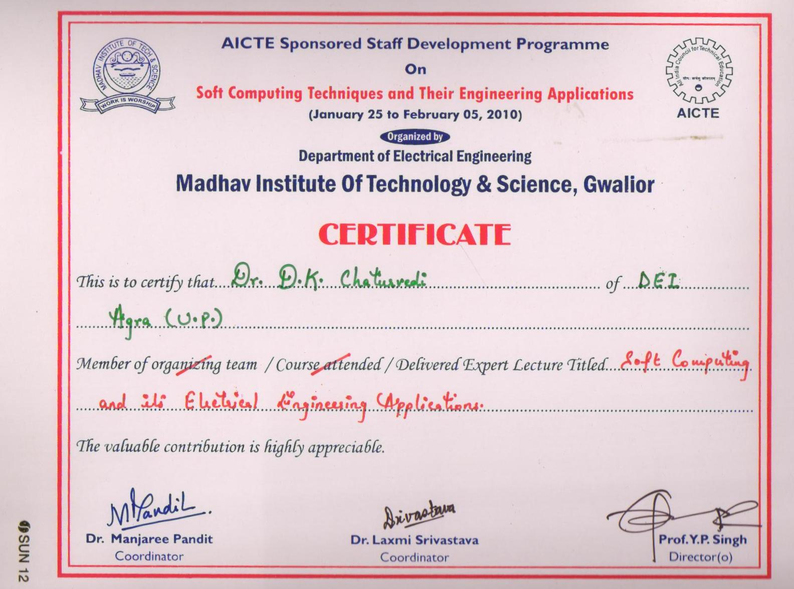
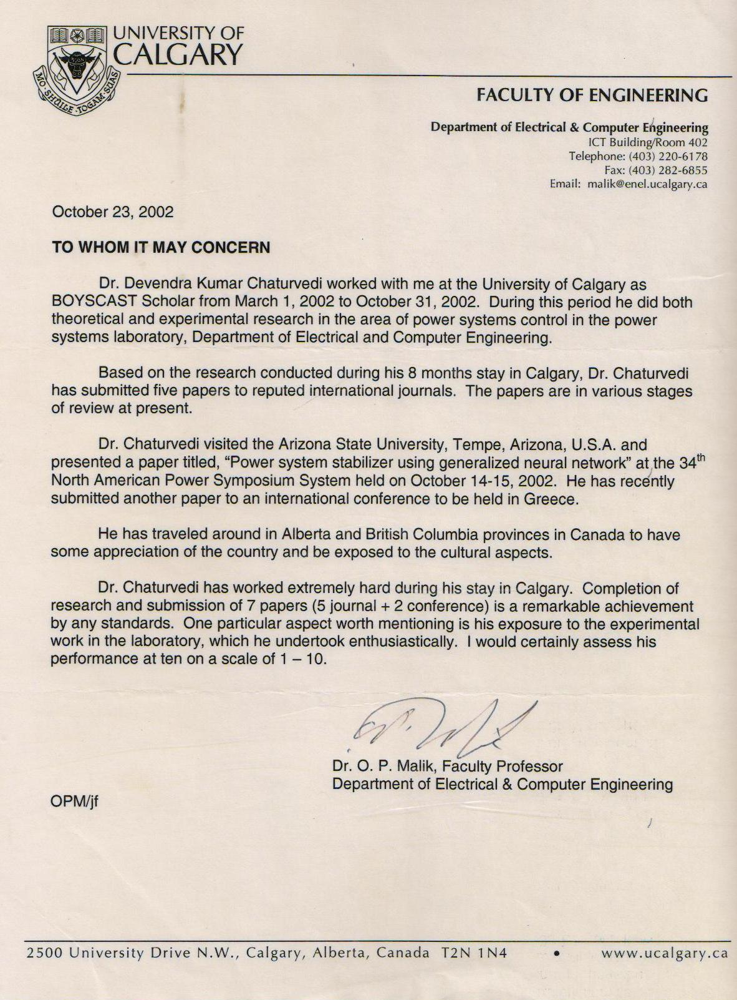

			<!-- start -->

<div id="output">
						<center>
</center></div>
					
					<div id="captions">
					
					  <div id="nav">
						  <ul>
							  <li><a href="#" class="navPrevious">[ &lt; ]</a></li>
							  <li><a href="#" class="navNext">[ &gt; ]</a></li>
							  <li><a href="#" class="navStopAdvance">[ Stop ]</a></li>
							  <li><a href="#" class="navPlayAdvance active">[ Play ]</a></li>
						</ul>
				    </div>
                    <span class="line"></span>
						
						<br class="clear" />
						
						<span class="line2"></span>
						
</div>			

					<ul class="thumbnails category1">
						<li class="first"></li>
						<li></li>
						<li></li>
						<li></li>
						<li></li>
						<li></li>
						<li></li>
						<li></li>
						<li class="thspe"></li>
						<li class="thspe"></li>
						<li class="thspe"></li>
						<li class="thspe"></li>
						<li class="thspe"></li>
						<li class="thspe"></li>
						<li class="thspe"></li>
						<li class="thspe"></li>
						<li class="thspe"></li>
						<li class="thspe"></li>
						<li class="thspe"></li>
						<li class="thspe"></li>
						<li class="thspe"></li>
						<li class="thspe"></li>
						<li class="thspe"></li>
						<li class="thspe"><li></li>
							</ul>

					<br class="clear" />
					
					<script type="text/javascript">

						$.gallerax({
							outputSelector: 		'#output img',				// Output selector
							thumbnailsSelector:		'.thumbnails li img',		// Thumbnails selector
							captionSelector:		'#captions .line',			// Caption selector
							captionLines:			2,							// Caption lines (3 lines)
							fade: 					'fast',						// Transition speed (fast)
							navNextSelector:		'#nav a.navNext',			// 'Next' selector
							navPreviousSelector:	'#nav a.navPrevious',		// 'Previous' selector
							navFirstSelector:		'#nav a.navFirst',			// 'First' selector
							navLastSelector:		'#nav a.navLast',			// 'Last' selector
							navStopAdvanceSelector:	'#nav a.navStopAdvance',	// 'Stop Advance' selector
							navPlayAdvanceSelector:	'#nav a.navPlayAdvance',	// 'Play Advance' selector
							advanceFade:			'slow',						// Advance transition speed (slow)
							advanceDelay:			4000,						// Advance delay (4 seconds)
							advanceResume:			12000,						// Advance resume (12 seconds)
							thumbnailsFunction: 	function(s) {				// Thumbnails function
							
								return s.replace(/_thumb\.jpg$/, '.jpg');
								
							}
						});

					</script>

			<!-- end -->
